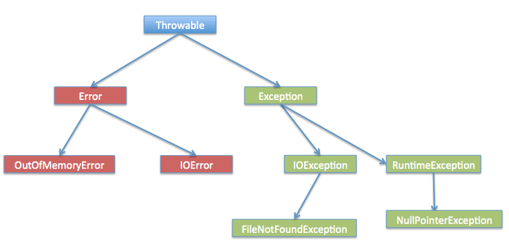
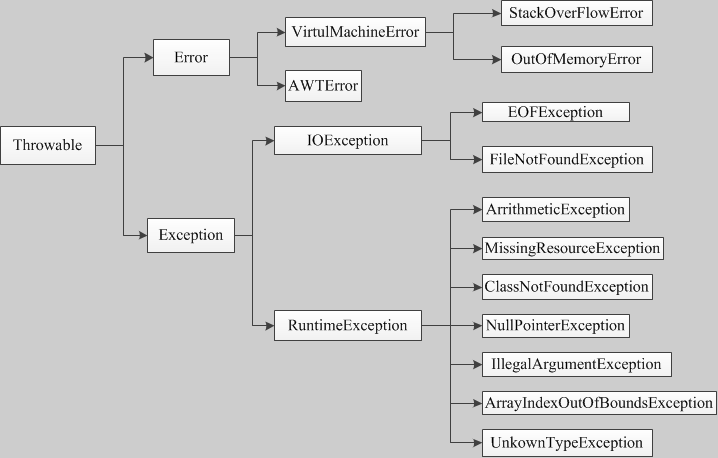

Java 例外処理
Java において、例外処理はプログラムの実行中に発生する可能性のあるエラーや異常な状況に対処するための重要なプログラミング概念です。
例外はプログラム内の何らかのエラーですが、すべてのエラーが例外であるわけではなく、エラーは回避できる場合もあります。
たとえば、コードにセミコロンが1つ欠けていると、実行結果はエラーメッセージが表示されます。java.lang.Error、もしあなたがSystem.out.println(11/0)、それならあなたは0除数にした場合、java.lang.ArithmeticExceptionの例外がスローされます。
例外が発生する原因は多く、通常以下のような大きな分類があります：
- ユーザーが不正なデータを入力した。
- 開こうとするファイルが存在しない。
- ネットワーク通信中に接続が切断された、またはJVMメモリがオーバーフローした。
これらの例外の中には、ユーザーエラーが原因のもの、プログラムエラーが原因のもの、その他物理的なエラーが原因のものもあります。
Java の例外処理がどのように機能するかを理解するには、次の3種類の例外を理解する必要があります：
検査例外：最も代表的な検査例外は、ユーザーのエラーや問題によって引き起こされる例外です。これらの例外はコンパイル時にプログラマが処理することを強制されます。例えば、存在しないファイルを開こうとすると例外が発生しますが、これらの例外はコンパイル時に単純に無視することはできません。
この種の例外は通常、try-catchブロックを使用して例外をキャッチして処理するか、メソッド宣言でthrows句を使用してメソッドがスローする可能性のある例外を宣言します。
try { // 可能会抛出异常的代码 } catch (IOException e) { // 处理异常的代码 }または：
public void readFile() throws IOException { // 可能会抛出IOException的代码 }実行時例外これらの例外はコンパイル時に処理が強制されず、通常はプログラム内のエラーによって引き起こされます。例えば NullPointerException、ArrayIndexOutOfBoundsException などです。この種の例外は処理するかどうか選択できますが、必須ではありません。
try { // 可能会抛出异常的代码 } catch (NullPointerException e) { // 处理异常的代码 }エラー：エラーは例外ではなく、プログラマの制御を離れた問題であり、コード内では通常無視されます。例えば、スタックオーバーフローが発生するとエラーが発生しますが、これらはコンパイル時にもチェックできません。
Java は例外処理をサポートするために、以下のキーワードとクラスを提供しています：
- try：例外をスローする可能性のあるコードブロックを囲むために使用します。
- catch：例外をキャッチして処理するためのコードブロックです。
- finally：例外が発生するかどうかにかかわらず実行する必要があるコードブロックを含めるために使用します。
- throw：手動で例外をスローするために使用します。
- throws：メソッド宣言でメソッドがスローする可能性のある例外を指定するために使用します。
- Exceptionクラス：すべての例外クラスのスーパークラスであり、例外情報を取得するためのいくつかのメソッドを提供します。例：getMessage()、printStackTrace()など。
Exception クラスの階層
すべての例外クラスは java.lang.Exception クラスから継承されたサブクラスです。
Exception クラスは Throwable クラスのサブクラスです。Exception クラスの他に、Throwable には Error というサブクラスもあります。
Java プログラムは通常、エラーをキャッチしません。エラーは通常、深刻な障害時に発生し、Java プログラムの処理範囲外です。
Error は実行時環境で発生するエラーを示すために使用されます。
例えば、JVM メモリオーバーフローです。一般に、プログラムはエラーから回復することはありません。
例外クラスには2つの主要なサブクラスがあります：IOException クラスと RuntimeException クラスです。

Java 組み込みクラスには(後で説明します)、一般的に使用される検査例外と非検査例外の大部分があります。
Java 組み込み例外クラス
Java 言語は java.lang 標準パッケージ内にいくつかの例外クラスを定義しています。
標準の実行時例外クラスのサブクラスは、最も一般的な例外クラスです。java.lang パッケージはすべての Java プログラムにデフォルトでロードされるため、実行時例外クラスから継承された例外のほとんどは直接使用できます。
Java は各クラスライブラリに基づいて他の例外も定義しています。次の表に Java の非検査例外を示します。
| 例外 | 説明 |
|---|---|
| ArithmeticException | 異常な演算条件が発生した場合にスローされる例外です。例えば、整数を「ゼロで割った」場合に、このクラスのインスタンスがスローされます。 |
| ArrayIndexOutOfBoundsException | 不正なインデックスで配列にアクセスしたときにスローされる例外です。インデックスが負の値か配列サイズ以上の場合、そのインデックスは不正です。 |
| ArrayStoreException | 誤った型のオブジェクトをオブジェクト配列に格納しようとしたときにスローされる例外です。 |
| ClassCastException | オブジェクトを、そのインスタンスではないサブクラスにキャストしようとしたときにスローされる例外です。 |
| IllegalArgumentException | メソッドに不正または不適切な引数が渡されたことを示すためにスローされる例外です。 |
| IllegalMonitorStateException | あるスレッドがオブジェクトのモニターを待機しようとしたか、または他のスレッドにオブジェクトのモニターを待機していることを通知しようとしたが、自分自身はモニターを所有していないことを示すためにスローされる例外です。 |
| IllegalStateException | 不正または不適切なタイミングでメソッドが呼び出されたときに発生するシグナルです。言い換えると、Java 環境または Java アプリケーションが要求された操作に必要な適切な状態にないことを示します。 |
| IllegalThreadStateException | スレッドが要求された操作に必要な適切な状態にないときにスローされる例外です。 |
| IndexOutOfBoundsException | 何らかの順序インデックス（例えば配列、文字列、またはベクトルのソート）が範囲外であることを示す場合にスローされます。 |
| NegativeArraySizeException | アプリケーションが負のサイズの配列を作成しようとした場合にスローされる例外です。 |
| NullPointerException | アプリケーションがオブジェクトを必要とする場所でnullを使用すると、この例外がスローされます。 |
| NumberFormatException | アプリケーションが文字列を数値型に変換しようとしたが、その文字列が適切な形式に変換できない場合にスローされる例外です。 |
| SecurityException | セキュリティマネージャによってスローされる例外で、セキュリティ違反が存在することを示します。 |
| StringIndexOutOfBoundsException | この例外はStringメソッドによってスローされ、インデックスが負であるか、文字列のサイズを超えていることを示します。 |
| UnsupportedOperationException | 要求された操作がサポートされていない場合にスローされる例外です。 |
次の表に、Java が java.lang パッケージで定義している検査例外クラスを示します。
| 例外 | 説明 |
|---|---|
| ClassNotFoundException | アプリケーションがクラスをロードしようとしたときに、対応するクラスが見つからない場合にスローされる例外です。 |
| CloneNotSupportedException | 呼び出し時にObjectクラス内のcloneメソッドがオブジェクトをクローンしようとしたが、そのオブジェクトのクラスがCloneableインターフェースを実装できない場合にスローされる例外です。 |
| IllegalAccessException | クラスへのアクセスが拒否された場合にスローされる例外です。 |
| InstantiationException | 使用しようとしたときClassクラス内のnewInstanceメソッドでクラスのインスタンスを作成しようとしたが、指定されたクラスオブジェクトがインターフェースまたは抽象クラスであるためインスタンス化できない場合にスローされる例外です。 |
| InterruptedException | あるスレッドが別のスレッドによって中断された場合にスローされる例外です。 |
| NoSuchFieldException | 要求された変数が存在しない |
| NoSuchMethodException | 要求されたメソッドが存在しない |
例外メソッド
以下のリストは Throwable クラスの主要なメソッドです：
| 番号 | メソッドと説明 |
|---|---|
| 1 |
public String getMessage() 発生した例外に関する詳細情報を返します。このメッセージは Throwable クラスのコンストラクタで初期化されます。 |
| 2 |
public Throwable getCause() 例外の原因を表す Throwable オブジェクトを返します。 |
| 3 |
public String toString() この Throwable の簡潔な説明を返します。 |
| 4 |
public void printStackTrace() この Throwable とそのスタックトレースを標準エラーストリームに出力します。 |
| 5 |
public StackTraceElement [] getStackTrace() スタック階層を含む配列を返します。添え字0の要素はスタックの先頭を表し、最後の要素はメソッド呼び出しスタックの一番下を表します。 |
| 6 |
public Throwable fillInStackTrace() 現在の呼び出しスタック階層で Throwable オブジェクトのスタック階層を埋め、スタック階層の以前の情報に追加します。 |
例外のキャッチ
try キーワードと catch キーワードを使用すると例外をキャッチできます。try/catch コードブロックは例外が発生する可能性のある場所に配置します。
try/catch コードブロック内のコードは保護コードと呼ばれます。try/catch の構文は次のとおりです：
try
{
// 程序代码
}catch(ExceptionName e1)
{
//Catch 块
}
catch 文は、捕捉する例外型の宣言を含みます。保護されたコードブロックで例外が発生すると、try の後の catch ブロックが検査されます。
発生した例外が catch ブロックに含まれる場合、例外はその catch ブロックに渡されます。これはパラメータを渡す方法と同じです。
例
下の例では、2つの要素を持つ配列を宣言しています。コードが配列の4番目の要素にアクセスしようとすると、例外がスローされます。
ExcepTest.java ファイルコード：
上記のコードをコンパイルして実行すると、出力結果は次のようになります。
Exception thrown :java.lang.ArrayIndexOutOfBoundsException: 3 Out of the block
多重キャッチブロック
try コードブロックの後に複数の catch コードブロックが続く状況を多重キャッチと呼びます。
多重キャッチブロックの構文は次のとおりです:
上記のコードセグメントには3つの catch ブロックが含まれています。
try 文の後には任意の数の catch ブロックを追加できます。
保護されたコードで例外が発生すると、例外は最初の catch ブロックにスローされます。
スローされた例外のデータ型が ExceptionType1 と一致する場合、ここで捕捉されます。
一致しない場合は、2番目の catch ブロックに渡されます。
このようにして、例外が捕捉されるか、すべての catch ブロックを通過するまで続きます。
例
この例は、多重 try/catch の使用方法を示しています。
複数例外のまとめてキャッチ
Java 7 から、より簡潔な書き方である「複数例外のまとめてキャッチ」が導入されました。1つの catch ブロックで継承関係のない複数の例外を処理できます。
try {
// 可能抛出多个不同类型异常的代码
} catch (异常类型1 | 异常类型2 | 异常类型3 异常变量) {
// 统一处理
}
注意すべき点:
- 例外型1、例外型2 などは継承関係を持つことはできません。継承関係があるとコンパイルエラーになります。
- 例外変数名はこれら3つの例外の共通参照変数であるため、catch ブロック内ではそれらに固有のメソッドを呼び出すことはできません。
- コンパイラは、この例外変数の型を、これらの例外の最も近い共通の親クラス（例: Exception や IOException）と推定します。
次のように、相互に継承関係がない例外で、SQLException と IOException の両方がスローされる可能性がある場合:
例
// SQL 例外と IO 例外の両方がスローされる可能性があります
doSomething();
} catch (SQLException | IOException e) {
System.out.println("SQL または IO 例外が発生しました！");
e.printStackTrace();
}
エラー例（親子関係にある例外はまとめることができません）:
// 错误写法！
catch (FileNotFoundException | IOException e) {
// 会导致编译错误，因为 FileNotFoundException 是 IOException 的子类
}
FileNotFoundException は IOException のサブクラスであるため、この書き方は実際には無効であり、コンパイルエラーになります。
throws/throw キーワード
Java では、throw 和 throwsキーワードは例外を処理するために使用されます。
throwキーワードはコード内で例外をスローするために使用され、一方throwsキーワードはメソッド宣言でスローされる可能性のある例外型を指定するために使用されます。
throw キーワード
throwキーワードは現在のメソッド内で例外をスローするために使用されます。
通常、コードが特定の条件で正常に実行を続けられない場合、次のように使用できます:throwキーワードを使用して例外をスローし、呼び出し元に現在のコードの実行状態を知らせます。
例えば、次のコードでは、メソッド内で num が 0 未満かどうかをチェックし、そうであれば IllegalArgumentException 例外をスローします。
例
if (num < 0) {
throw new IllegalArgumentException("Number must be positive");
}
}
throws キーワード
throwsキーワードは、メソッド宣言でそのメソッドがスローする可能性のある例外を指定するために使用されます。メソッド内で指定された型の例外がスローされると、その例外はメソッドを呼び出したコードに渡され、そのコードで例外が処理されます。
例えば、次のコードでは、readFile メソッド内で IOException 例外が発生した場合、その例外はメソッドを呼び出したコードに渡されます。メソッドを呼び出すコードでは、IOException 例外をキャッチするか、宣言して処理する必要があります。
例
BufferedReader reader = new BufferedReader(new FileReader(filePath));
String line = reader.readLine();
while (line != null) {
System.out.println(line);
line = reader.readLine();
}
reader.close();
}
1つのメソッドは複数の例外をスローすることを宣言でき、複数の例外はカンマで区切ります。
例えば、次のメソッドは RemoteException と InsufficientFundsException をスローすることを宣言しています:
finally キーワード
finally キーワードは、try コードブロックの後に実行されるコードブロックを作成するために使用されます。
例外が発生するかどうかに関係なく、finally コードブロック内のコードは常に実行されます。
finally コードブロック内では、クリーンアップなどの後処理を行うステートメントを実行できます。
finally コードブロックは catch コードブロックの最後に置かれ、構文は次のとおりです:
例
ExcepTest.java ファイルコード：
上記の例をコンパイルして実行した結果は次のとおりです:
Exception thrown :java.lang.ArrayIndexOutOfBoundsException: 3 First element value: 6 The finally statement is executed
次の点に注意してください:
- catch は try から独立して存在することはできません。
- try/catch の後に finally ブロックを追加することは必須ではありません。
- try コードの後には、catch ブロックも finally ブロックもない状態は許されません。
- try、catch、finally ブロックの間にはコードを追加できません。
try-with-resources
JDK 7 以降、Java に新たに追加されたtry-with-resource構文構造は、リソースを自動管理し、リソースが使用後に適切に閉じられ、リソースリークを防ぐことを目的としています。
try-with-resources は例外処理メカニズムであり、try ブロック内で宣言されたリソースを自動的に閉じるため、finally ブロックで明示的に閉じる必要がありません。
try-with-resources 文では、try キーワードの後にリソースを宣言し、その後にコードブロックを続けるだけです。コードブロック内の操作が成功するかどうかに関係なく、リソースは try コードブロックの実行後に自動的に閉じられます。
try (resource declaration) {
// 使用的资源
} catch (ExceptionType e1) {
// 异常块
}
上記の構文では、try はリソースの宣言とインスタンス化に使用され、catch はリソースを閉じるときに発生する可能性のあるすべての例外を処理するために使用されます。
注意:try-with-resources 文は、AutoCloseable インターフェースを実装するすべてのリソースを閉じます。
例
public class RunoobTest {
public static void main(String[] args) {
String line;
try(BufferedReader br = new BufferedReader(new FileReader("test.txt"))) {
while ((line = br.readLine()) != null) {
System.out.println("Line =>"+line);
}
} catch (IOException e) {
System.out.println("IOException in try block =>" + e.getMessage());
}
}
}
上記の例の出力結果は次のとおりです:
IOException in try block =>test.txt (No such file or directory)
上記の例では、BufferedReader オブジェクトをインスタンス化して test.txt ファイルからデータを読み取ります。
try-with-resources 文で BufferedReader オブジェクトを宣言およびインスタンス化すると、実行が完了した後、try 文が正常に実行されたか例外をスローしたかを考慮することなく、リソースが自動的に閉じられます。
例外が発生した場合は、catch を使用して例外を処理できます。
では、使わない場合を見てみましょう。try-with-resources代わりにfinallyリソースを閉じると、コード全体の量が大幅に増え、より複雑で煩雑になります:
例
class RunoobTest {
public static void main(String[] args) {
BufferedReader br = null;
String line;
try {
System.out.println("Entering try block");
br = new BufferedReader(new FileReader("test.txt"));
while ((line = br.readLine()) != null) {
System.out.println("Line =>"+line);
}
} catch (IOException e) {
System.out.println("IOException in try block =>" + e.getMessage());
} finally {
System.out.println("Entering finally block");
try {
if (br != null) {
br.close();
}
} catch (IOException e) {
System.out.println("IOException in finally block =>"+e.getMessage());
}
}
}
}
上記の例の出力結果は次のとおりです:
Entering try block IOException in try block =>test.txt (No such file or directory) Entering finally block
try-with-resources による複数リソースの処理
try-with-resources 文では、セミコロンを使用して複数のリソースを宣言できます。;各リソースを区切ります:
例
import java.util.*;
class RunoobTest {
public static void main(String[] args) throws IOException{
try (Scanner scanner = new Scanner(new File("testRead.txt"));
PrintWriter writer = new PrintWriter(new File("testWrite.txt"))) {
while (scanner.hasNext()) {
writer.print(scanner.nextLine());
}
}
}
}
上記の例では、Scanner オブジェクトを使用して testRead.txt ファイルから1行を読み取り、新しい testWrite.txt ファイルに書き込みます。
複数のリソースを宣言する場合、try-with-resourcestry-with-resources 文はこれらのリソースを逆の順序で閉じます。この例では、PrintWriter オブジェクトが最初に閉じられ、次に Scanner オブジェクトが閉じられます。
詳細は以下を参照してください:
- try-with-resources：Java try-with-resources 文
- リソース管理:Java Cleaner クラス
カスタム例外の宣言
Java ではカスタム例外を定義できます。独自の例外クラスを作成するときは、次の点に注意してください。
- すべての例外は Throwable のサブクラスである必要があります。
- チェック例外クラスを作成したい場合は、Exception クラスを継承する必要があります。
- 実行時例外クラスを作成したい場合は、RuntimeException クラスを継承する必要があります。
独自の例外クラスは次のように定義できます:
Exception クラスのみを継承して作成された例外クラスは、チェック例外クラスです。
次の InsufficientFundsException クラスは、Exception から継承したユーザー定義の例外クラスです。
例外クラスは他のクラスと同様に、変数とメソッドを含みます。
例
以下のインスタンスは銀行口座のシミュレーションであり、銀行カードの番号によって識別を行い、入金と出金の操作ができます。
InsufficientFundsException.java ファイルコード：
カスタム例外クラスの使用方法を示すために、
以下の CheckingAccount クラスには、InsufficientFundsException 例外をスローする withdraw() メソッドが含まれています。
CheckingAccount.java ファイルコード：
以下の BankDemo プログラムは、CheckingAccount クラスの deposit() メソッドと withdraw() メソッドを呼び出す方法を示しています。
BankDemo.java ファイルコード：
上記の3つのファイルをコンパイルし、プログラム BankDemo を実行すると、結果は次のようになります：
Depositing $500...
Withdrawing $100...
Withdrawing $600...
Sorry, but you are short $200.0
InsufficientFundsException
at CheckingAccount.withdraw(CheckingAccount.java:25)
at BankDemo.main(BankDemo.java:13)
一般的な例外
Javaでは、2つのタイプの例外とエラーが定義されています。
- JVM(Java仮想マシン)例外：JVMによってスローされる例外またはエラー。例：NullPointerException クラス、ArrayIndexOutOfBoundsException クラス、ClassCastException クラス。
- プログラムレベルの例外：プログラムまたはAPIプログラムによってスローされる例外。例：IllegalArgumentException クラス、IllegalStateException クラス。
例外処理のベストプラクティス
- 適切な場所で例外をキャッチし、例外に対して適切な処理を行い、プログラムの安定性と信頼性を確保します。
- 過剰に例外をキャッチすることを避け、特定のタイプの例外をできるだけ正確にキャッチする必要があります。
- finallyブロックを使用してリソースを解放します。例えば、ファイルやデータベース接続を閉じるなどして、リソースが正しく解放されることを確保します。
- チェック例外を優先的に処理し、チェック例外を非チェック例外に変換することを避けます。
例外処理は堅牢な Java アプリケーションを作成するための重要な構成要素であり、例外を適切に処理することでプログラムの保守性と信頼性を向上させることができます。
その他の拡張
veblen
153***1086@qq.com
用語解説：
veblen
153***1086@qq.com
为我所望
190***9847@qq.com
例外の使用は以下の原則に従うことができます：
1：現在のメソッドがオーバーライドされる場合、オーバーライドするメソッドは同じ例外または例外のサブクラスをスローする必要があります；
2：現在のメソッド宣言内でtry-catch文を使用して例外をキャッチします；
3：親クラスが複数の例外をスローする場合、オーバーライドするメソッドはそれらの例外のサブセットのみをスローする必要があり、新しい例外をスローすることはできません。
为我所望
190***9847@qq.com
doublefan
187***60835@163.com

図からわかるように、すべての例外とエラーはThrowableクラスを継承しています。つまり、すべての例外はオブジェクトです。
大きな分類として、例外は2つに分けられます：
1、error---エラー：プログラムが処理できないエラーを指し、アプリケーションの実行時に発生する重大なエラーを表します。例えば、JVM実行時に発生するOutOfMemoryErrorや、Socketプログラミング時に発生するポート占有など、プログラムが処理できないエラーです。
2、Exception --- 例外：例外は実行時例外とコンパイル例外に分けられます
3、Javaの例外処理メカニズム：例外のスローと例外のキャッチ。あるメソッドがキャッチできる例外は、必ずJavaコードのどこかでスローされた例外です。簡単に言えば、例外は常に最初にスローされ、その後でキャッチされます。
4、throwとthrowsの違い：
public void test() throws Exception { throw new Exception(); }上記のコードから両者の違いが明確にわかります。throwsはメソッドが例外をスローする可能性があることを宣言し、throwはここで定義済みの例外をスローすることを示します（Exceptionを継承するカスタム例外でも、Javaが提供する例外クラスでも構いません）。
5、次に例外のキャッチ方法を見てみましょう：
1）まず、Javaは例外のキャッチにtry---catchまたはtry---catch---finallyコードブロックを使用します。プログラムはtryコードブロック内のコードを実行し、例外をキャッチした場合はcatchコードブロックで処理します。finallyがある場合は、catch処理後にfinally内のコードを実行します。しかし、次の2つの問題があります：
a. 次のコードを見てください：
try{ //待捕获代码 }catch（Exception e）{ System.out.println("catch is begin"); return 1 ； }finally{ System.out.println("finally is begin"); }catch内にreturnがある場合、finallyは実行されるのでしょうか？答えは「はい」です。上記のコードの実行結果は次のようになります：
つまり、最初にcatch内のコードが実行され、その後finally内のコードが実行され、最後にreturn 1が実行されます；
b. 次のコードを見てください：
try{ //待捕获代码 }catch（Exception e）{ System.out.println("catch is begin"); return 1 ； }finally{ System.out.println("finally is begin"); return 2 ; }bのコードでは出力結果はaと同じですが、返されるのはreturn 2です。理由は明らかで、finallyが実行された時点で既にreturnされているため、catch内のreturnは実行されません。つまり、finallyは常にcatchのreturnよりも前に実行されます。（これは面接でよく聞かれる問題です！）
6、例外のキャッチについて、便利だからといって複数の例外を1つのExceptionにまとめてキャッチすべきではありません。例えばIO例外とSQL例外のような、まったく異なる2つの例外は分けて処理すべきです！また、catchで例外を処理するときは、単純にe.printStackTrace()とするのではなく、詳細な処理を行うべきです。例えば、コンソールに詳細を出力したり、ログを記録したりします。
doublefan
187***60835@163.com
599069310
599***310@qq.com
Java言語はjava.lang標準パッケージにいくつかの例外クラスを定義しています。標準実行時例外クラスのサブクラスは最も一般的な例外クラスです。java.langパッケージはすべてのJavaプログラムにデフォルトでロードされるため、実行時例外クラスから継承された例外のほとんどは直接使用できます。
/** * 异常: * finally不一定被执行，，例如 catch 块中有退出系统的语句 System.exit(-1); finally就不会被执行 * */ import java.io.*; public class Demo { /** * @param args */ public static void main(String[] args) { //检查异常1.打开文件 FileReader fr=null; try { fr=new FileReader("d:\\aa.text"); // 在出现异常的地方，下面的代码的就不执行 System.out.println("aaa"); } catch (Exception e) { System.out.println("进入catch"); // 文档读取异常 // System.exit(-1); System.out.println("message="+e.getLocalizedMessage()); //没有报哪一行出错 e.printStackTrace(); // 打印出错异常还出现可以报出错先异常的行 } // 这个语句块不管发生没有发生异常，都会执行 // 一般来说，把需要关闭的资源，文件，连接，内存等 finally { System.out.println("进入finally"); if(fr!=null); { try { fr.close(); } catch (Exception e) { // TODO: handle exception e.printStackTrace(); } } } System.out.println("OK"); } }599069310
599***310@qq.com
Husky
lh1***ke@163.com
throwsは関数に使用し、その関数の機能に問題が発生する可能性があることを宣言します。
例外をスローして問題を明らかにし、処理に使用します。
仮想マシンに処理を任せるか、try....catch...を使用して処理することができます。仮想マシンの処理方法は、例外を出力し、例外が発生した場所のコードを終了させることです。
throwはコードブロック内で使用し、後ろに例外オブジェクトを続けます。そのオブジェクトはカスタム例外でもよく、throwはメソッド内で使用します。
class FuShuException extends Exception //getMessage(); { private int value; FuShuException() { super(); } FuShuException(String msg,int value) { super(msg); this.value = value; } public int getValue() { return value; } } class Demo { int div(int a,int b)throws FuShuException { if(b<0) { // 手动通过throw关键字抛出一个自定义异常对象。 throw new FuShuException("出现了除数是负数的情况------ / by fushu",b); } return a/b; } } class ExceptionDemo3 { public static void main(String[] args) { Demo d = new Demo(); try { int x = d.div(4,-9); System.out.println("x="+x); } catch (FuShuException e) { System.out.println(e.toString()); //System.out.println("除数出现负数了"); System.out.println("错误的负数是："+e.getValue()); } System.out.println("over"); } }Husky
lh1***ke@163.com
Husky
lh1***ke@163.com
throwsはメソッドに使用し、複数の例外をスローできます。各例外のクラス名はカンマで区切ります。
try...catch....で例外をキャッチするとき、大きな例外（Exceptionクラス）は下に置き、小さな例外は上に置きます。そうしないと、例外キャッチ時に小さな例外がキャッチされなくなります。なぜなら、すべて大きな例外クラスでキャッチされてしまうからです。
つまり、複数のcatchブロックの例外に継承関係がある場合、親クラスの例外catchブロックを一番下に置きます。
例外の処理方法として、直接プリントしたり、直接出力したりしてはいけません。正しい処理方法：
class FuShuException extends Exception { private int value; FuShuException() { super(); } FuShuException(String msg, int value) { super(msg);//调用父类有参构造,获得异常信息 this.value = value; } public int getValue() { return value; } } class Demo { int div(int a, int b) throws FuShuException { if (b < 0) throw new FuShuException("出现了除数是负数的情况by fushu", b);// 手动通过throw关键字抛出一个自定义异常对象。 return a / b; } } public class MyT { public static void main(String[] args) { Demo d = new Demo(); try { int x = d.div(4, -9); System.out.println("x=" + x); } catch (FuShuException e) { System.out.println(e.toString()); System.out.println("错误的负数是：" + e.getValue()); }catch (Exception e) {//大的异常放在下方,小的异常放在上方 System.out.println(e.getMessage()); } System.out.println("end"); } }Husky
lh1***ke@163.com
藏剑
947***451@qq.com
参考アドレス
1.チェック例外（Checked Exception）
個人の理解：いわゆるチェック（Checked）とは、コンパイラがこの種の例外をチェックすることを指します。チェックの目的は、一つにはこの種の例外の発生が避けられないためであり、もう一つには開発者にこの種の例外を解決させるためです。そのため、必ず処理（try...catch）しなければならない例外と呼ばれます。この種の例外を処理しない場合、統合開発環境のコンパイラは通常エラーメッセージを表示します。
例：ファイルを読み取るメソッドのコードロジックに誤りがなくても、プログラムの実行時にファイルが見つからずFileNotFoundExceptionがスローされる可能性があります。これらの例外を処理しないと、プログラムは将来的に必ずエラーになります。そのため、コンパイラはこのような発生し得る例外をキャッチして処理するよう促し、処理しないとコンパイルに通りません。
2.非チェック例外（Unchecked Exception）
個人の理解：いわゆる非チェック（Unchecked）とは、コンパイラがこの種の例外をチェックしないことを指します。チェックしないため、開発者はコードの編集・コンパイル段階で必ずしも処理する必要はありません。この種の例外は通常回避可能なため、処理（try...catch）は不要です。この種の例外を処理しなくても、統合開発環境のコンパイラはエラーメッセージを表示しません。
例：プログラムのロジック自体に問題がある場合、例えば配列の範囲外アクセスやnullオブジェクトへのアクセスなど、こうしたエラーは自分で回避できます。コンパイラはこのような例外をチェックすることを強制しません。
藏剑
947***451@qq.com
参考アドレス